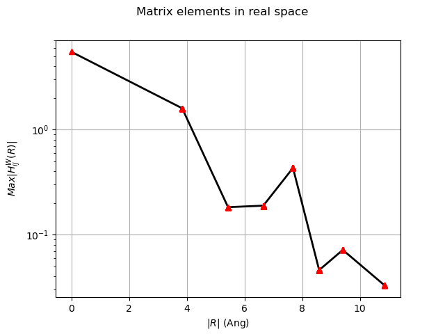
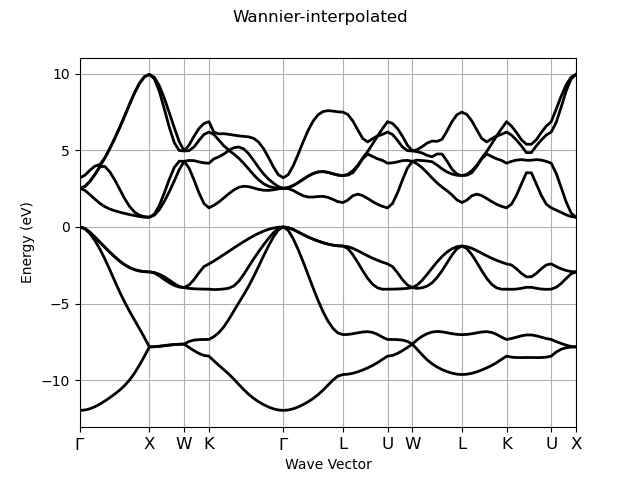
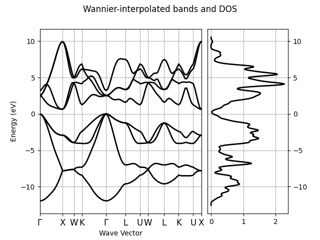

Note
Click here to download the full example code or to run this example in your browser via Binder
Band structure interpolation with Wannier functions¶
This example shows how to analyze the wannier90 results using the ABIWAN.nc netcdf file produced by Abinit when calling wannier90 in library mode. Use abiopen FILE.wout for a command line interface and the –expose option to generate matplotlib figures automatically.
- 
- 
- 
Out:
================================= File Info =================================
Name: tw90_4o_DS3_ABIWAN.nc
Directory: /Users/gmatteo/git_repos/abipy/abipy/data/refs/wannier90/tutoplugs_tw90_4
Size: 205.47 kb
Access Time: Wed Mar 20 21:31:02 2019
Modification Time: Wed Mar 20 16:53:35 2019
Change Time: Wed Mar 20 16:53:35 2019
================================= Structure =================================
Full Formula (Si2)
Reduced Formula: Si
abc : 3.840259 3.840259 3.840259
angles: 60.000000 60.000000 60.000000
Sites (2)
# SP a b c
--- ---- ---- ---- ----
0 Si 0 0 0
1 Si 0.25 0.25 0.25
Abinit Spacegroup: spgid: 227, num_spatial_symmetries: 24, has_timerev: False, symmorphic: False
============================== Electronic Bands ==============================
Number of electrons: 8.0, Fermi level: 5.861 (eV)
nsppol: 1, nkpt: 64, mband: 14, nspinor: 1, nspden: 1
smearing scheme: none (occopt 1), tsmear_eV: 0.272
Direct gap:
Energy: 2.519 (eV)
Initial state: spin: 0, kpt: [+0.000, +0.000, +0.000], weight: 0.016, band: 3, eig: 5.861, occ: 2.000
Final state: spin: 0, kpt: [+0.000, +0.000, +0.000], weight: 0.016, band: 4, eig: 8.380, occ: 0.000
Fundamental gap:
Energy: 0.635 (eV)
Initial state: spin: 0, kpt: [+0.000, +0.000, +0.000], weight: 0.016, band: 3, eig: 5.861, occ: 2.000
Final state: spin: 0, kpt: [+0.500, +0.500, +0.000], weight: 0.016, band: 4, eig: 6.496, occ: 0.000
Bandwidth: 11.953 (eV)
Valence maximum located at:
spin: 0, kpt: [+0.000, +0.000, +0.000], weight: 0.016, band: 3, eig: 5.861, occ: 2.000
Conduction minimum located at:
spin: 0, kpt: [+0.500, +0.500, +0.000], weight: 0.016, band: 4, eig: 6.496, occ: 0.000
TIP: Call set_fermie_to_vbm() to set the Fermi level to the VBM if this is a non-magnetic semiconductor
================================== K-points ==================================
K-mesh with divisions: [4, 4, 4], shifts: [0.0, 0.0, 0.0]
kptopt: 3 (Do not take into account any symmetry)
Number of points in the IBZ: 64
0) [+0.000, +0.000, +0.000], weight=0.016
1) [+0.250, +0.000, +0.000], weight=0.016
2) [+0.500, +0.000, +0.000], weight=0.016
3) [-0.250, +0.000, +0.000], weight=0.016
4) [+0.000, +0.250, +0.000], weight=0.016
5) [+0.250, +0.250, +0.000], weight=0.016
6) [+0.500, +0.250, +0.000], weight=0.016
7) [-0.250, +0.250, +0.000], weight=0.016
8) [+0.000, +0.500, +0.000], weight=0.016
9) [+0.250, +0.500, +0.000], weight=0.016
10) [+0.500, +0.500, +0.000], weight=0.016
... (More than 10 k-points)
============================= Wannier90 Results =============================
No of Wannier functions: 8, No bands: 14, Number of k-point neighbours: 8
Disentanglement: True, exclude_bands: no
WF_index Center Spread
0 [1.12195 1.59353 1.59353] 2.767
1 [1.59353 1.59353 1.12195] 2.767
2 [1.12195 1.12195 1.12195] 2.767
3 [1.59353 1.12195 1.59353] 2.767
4 [0.23579 0.23579 0.23579] 2.767
5 [0.23579 2.47968 2.47968] 2.767
6 [2.47968 0.23579 2.47968] 2.767
7 [2.47968 2.47968 0.23579] 2.767
HWanR built in 0.014 (s)
Interpolation completed in 0.012 [s]
Interpolation completed in 0.004 [s]
<Figure size 640x480 with 2 Axes>
import os
import abipy.data as abidata
from abipy.abilab import abiopen
# Open the ABIWAN file
filepath = os.path.join(abidata.dirpath, "refs", "wannier90", "tutoplugs_tw90_4", "tw90_4o_DS3_ABIWAN.nc")
abiwan = abiopen(filepath)
print(abiwan)
# Plot the matrix elements of the KS Hamiltonian in real space in the Wannier Gauge.
abiwan.hwan.plot(title="Matrix elements in real space")
# Interpolate bands with Wannier functions using an automatically selected k-path
# with 5 points for the smallest segment.
ebands_wan_kpath = abiwan.interpolate_ebands(line_density=5)
ebands_wan_kpath.plot(title="Wannier-interpolated")
# Interpolate bands in the IBZ defined by ngkpt
ebands_wan_kmesh = abiwan.interpolate_ebands(ngkpt=[8, 8, 8])
edos = ebands_wan_kmesh.get_edos()
ebands_wan_kpath.plot_with_edos(edos, title="Wannier-interpolated bands and DOS")
# To compare the interpolated bands with ab-initio results,
# pass a file with the ab-initio bands to the get_plotter_from_ebands method
# that will return an ElectronBandsPlotter object.
#plotter = abiwan.get_plotter_from_ebands("out_GSR.nc")
#plotter.combiplot()
Total running time of the script: ( 0 minutes 1.283 seconds)